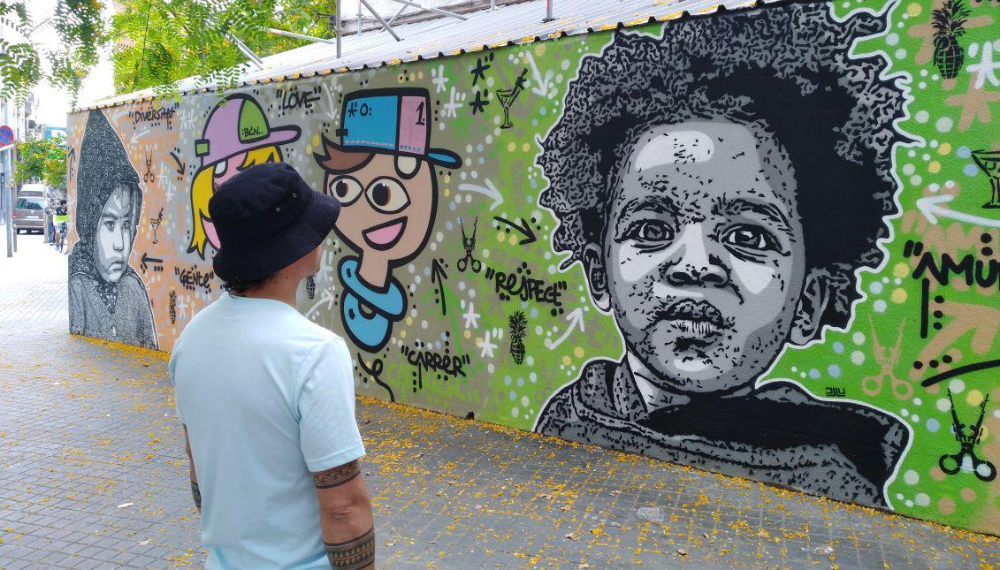
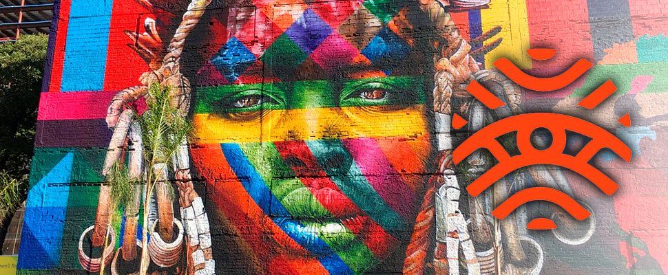
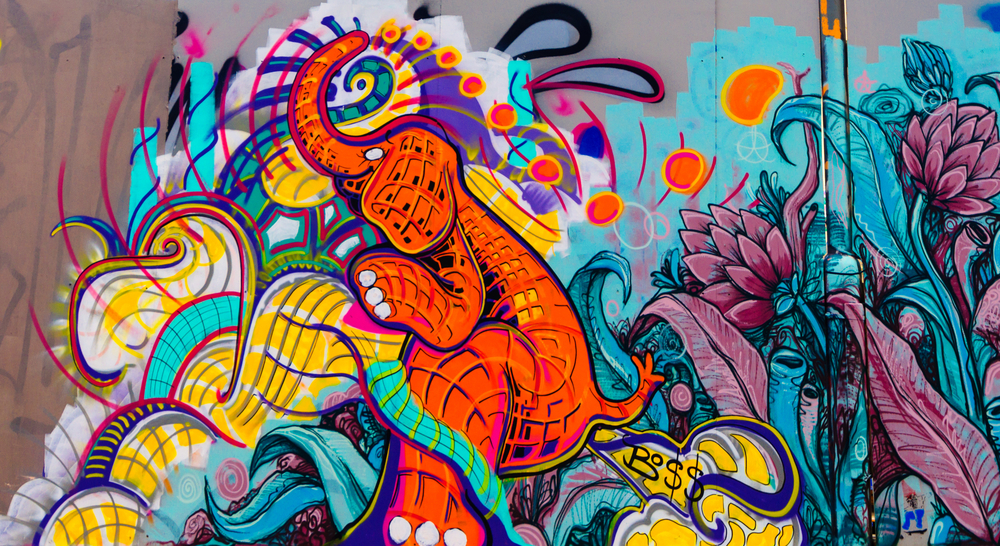

Tema 1: Proceso de enseñanza y aprendizaje del Arte Urbano

Introducción al tema.
El Arte Urbano y el grafiti en especial con el pasar del tiempo han conformado una comunidad con intereses afines, que se reúne en torno al proceso de creación, como lo vimos en los temas que anteceden a este, la evolución del arte urbano y las diferentes técnicas de hacer grafiti se dio gracias la creación de nuevas prácticas, desde la primera acción de pintar una superficie con un aerosol, se genera una cadena de conocimiento, y a medida que se suman nuevos individuos a la expresión del arte urbano , de igual forma se buscan nuevas formas de hacer grafiti, ya sea buscando nuevos espacios, nuevos estilos, nuevos materiales o un nuevo mensaje en cualquier ámbito social o educativo. La cadena continuará expandiéndose a medida que se suman individuos y que éstos transmitan sus conocimientos unos a otros, es así como se habla de un aprendizaje mutuo el cual va reforzándose a medida que el individuo se inspire y crea, es así como la fuerza del arte urbano a través de las diferentes técnicas del grafiti crean un movimiento artístico social y cultural que identifica a cada persona o región.
Analizando el proceso evolutivo del arte urbano el proceso de enseñanza aprendiza se desarrolla en primer lugar de manera interna en el individuo y se desarrolla a través de la interacción de los participantes en el mismo. Podríamos ver las crew como espacios de formación, sin embargo no todos aquellos que hacen grafiti pertenecen a una crew, se destacan las mesas de grafiti locales como un espacio que fomente el aprendizaje, ya que por medio de acciones que buscan hacer visible el grafiti de una localidad, se genera un cuerpo productivo en torno al grafiti en el que el intercambio de conocimientos es constante y como último espacio no formal de enseñanza del grafiti están los espacios de encuentro, del mismo que en sus inicios los gasfiteros se reunían en las estaciones del metro, para pintar en conjunto o para ver las paredes pintadas de una calle o un establecimiento.
En la actualidad algunos eventos en la ciudad cumplen esta función de generar espacios de encuentro. Con esto identificamos que un primer proceso de enseñanza se da a partir de los espacios generados por la práctica del grafiti y que este proceso de enseñanza no posee, estructura académica formal o un espacio predeterminado o una organización temática por sesiones semanales y es justo este el proceso pedagógico que ha permitido que el grafiti trascienda, ya que quienes hacen parte de él lo hacen con el interés de hacer grafiti de forma constante.
De otra parte encontramos procesos formales de enseñanza en torno al arte urbano y técnicas del grafiti como en carreras técnicas, tecnológicas o profesionales que ofrecen algunos centros o universidades. En las Instituciones Educativas de Educación Formal se encuentra el Área de Educación Artística la cual cuenta con ejes temáticos, sesiones de trabajo inicial y final que permite evaluar el mismo y se cuenta además con un aula en la cual se desarrollan las clases de los estudiantes en el cual se fortalecen los procesos de aprendizaje similares, estos espacios permiten un encuentro entre sus participantes, una exploración teórica y una experimentación practica del grafiti. Los participantes de estos espacios formales llegan por un interés en la temática y normalmente al inicio del curso conocen las temáticas que verán a lo largo de las sesiones o programas, pero al estar estructurado es un proceso que posee una etapa inicial y una etapa final, a diferencia de los espacios no formales en los que el proceso de enseñanza y aprendizaje no está limitado temporalmente.

Descargado de Link

Descargado de Link

Descargado de Link

Descargado de Link

Descargado de Link

Descargado de Link
Ejes temáticos
En este orden de ideas, tanto los procesos de enseñanza formales como los informales giran en torno a unos ejes temáticos principales que se pueden definir de la siguiente forma y que en este curso sobre Arte urbano en la Biblioteca Nencatacoa se desarrolla en un ambiente formal de aprendizaje:
• Un aprendizaje histórico del Arte urbano y del grafiti, que permita identificar la noción general de lo que es el Arte Urbano y la palabra grafiti, conociendo de esta forma la verdadera trascendencia de la práctica, por medio del reconocimiento histórico se identifica la intencionalidad del mismo, se diferencian los estilos y los modos de producción cualitativa de éstos. Este aprendizaje del contexto histórico permite la enseñanza y aprendizaje de donde se adquieren las bases del arte urbano y técnicas del grafiti como un movimiento artístico, social y educativo.
• Un Aprendizaje y Reconocimiento Social del Entorno en el cual se desarrolla el proceso de creación del Arte Urbano, esto incluye conocer las normas de regulación de la práctica, reconocer la población que habita el sector y de acuerdo con la intencionalidad de la intervención, generar estrategias para integrar a la comunidad en el proceso.
• Un aprendizaje Técnico de los materiales que se utilizan en el Arte urbano y Graffiti, principalmente el uso del aerosol, para la comprensión del manejo de la presión, de igual forma reconocer y diferenciar las diferentes técnicas, su proceso de elaboración y los materiales necesarios para desarrollarlas.
• Un aprendizaje estético que va ligado al aspecto técnico del Arte urbano y el grafiti, la estética del grafiti está ligada a los estilos de producción del grafiti, que como se explica en el tema sobre tipografía y color, se diferencia por la complejidad o legibilidad de las letras, ligado al carácter estético esta la composición y el manejo de color
Videos de apoyo
Te invitamos a el siguiente video con el cual puedes aprender un poco màs del tema.